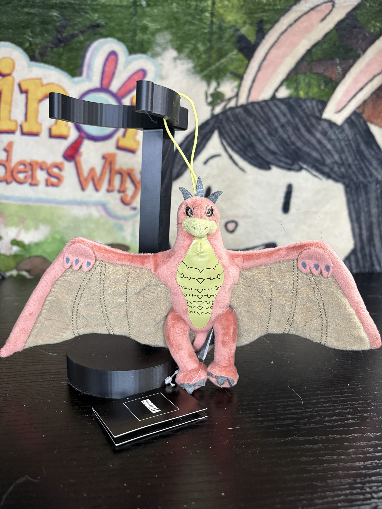

Rodan
Release Date: 2020? 2021?
Company: Fukuya?
Heres a little guy! I think this was a gift from someone whom i will not talk about, from an arcade or something? my memory is a little fuzzy, i have a horrible memory. anyways hes a cool little guy, kinda goofy, very off like.. off model so to speak but for a little keychain its really cute! It is based off legendary godzilla movies, obviously. I'm not the biggest fan of some of them, but theyre still fun corny movies. well aside from the kong focused ones. sorry legendary i do not care for big monkey. oh uhh anyways, good little plush :)

TY Godzilla
Release Date: 2001
Company: TY
i never woulda thought TY wouldve made a godzilla plush? its super cool, well made- however its incredibly goofy i adore his silly little tongue stickin' out like that. The mouth in general is just kinda goofy. It's a really good plush albiet a little goofy. it's a fairly good plush, decent size it feels more of a display plush but still really nice. fairly accurate for what it is too, all around a good Godzilla!

Blue Godzilla
Release Date: 2018
Company: Phunny Kidrobot
I.. hate that I have this in my house tbh. it's so ugly, why is he blue???? was there any godzilla that was this color of blue? I know godzilla merch isnt like something like pokemon that everything needs to be on model but.. idk mannn this just aint it. i think these are fairly common plushes i remember seein em in like targets and shit very common guy. I dunno what to say, I guessss if you want a.. "cute"? plush of godzilla this is Like.. a really cheap option- though it is bootlegged fairly regularly so be warned of that if you seek it out.

Kidrobot Godzilla
Release Date: 2018
Company: Phunny Kidrobot
WHY DO I EVEN HAVE TWO??????????????????????????????????????? GENUINELY I DONT REMEMBER HAVING TWO???? UGLY FUCK THIS THING MAN.

Burning Godzilla
Release Date: 1999
Company: Banpresto
Theres something about older like 90s era JP plushes- at least for the things I like. Like, theres a lotta godzilla plushes that are really cute but are also really like frim, and made of rougher or vinyl material that can age poorly. Perhaps they're more for display, they do look cute in kinda an ugly way. This plush used to have its tag, it was a really cool one too but my cat decided to chew it off so.. ya know :( This guy is cool, he's fairly small but its cute and honestly pretty cool on a shelf- though if it accrues dust, it is kinda hard to clean given the material? oh well, hes a cool fella!

Kamata-kun
Release Date: 2017
Company: Sega
this fella is one of my favoites! Also one of the few orders I've gotten from Yahoo Auctions JP and Mercari JP via a proxy service! It's a MASSIVE 23” PLUSH! He's HUGE, and like absolutely adorable and like, its design is naturally simplified but not so much so its not recognizable! I will say the few tiny gripes i have with it are.. They use like a very scratchy felt for the dorsal plates which its not good for like holding or cuddling- the material of the plush itself also isnt the greatest? It's ok but its not the best. all that aside matters very little to me though its a MASSIVE plush, that looks awesome as a display, from the greatest godzilla movie ever so I can't complain at all. Kamata-kun is just a silly little guy :3

Shin Godzilla
Release Date: 2017
Company: Sega
Much of what I have to say about the previous guy, fits this guy too! He's very large, he's around the same length but taller and made of the same material so has the same downfalls of material and felt used. I think he's definitely Like less cute? I mean obviously Full Shin Godzilla is obviously less cute but, I guess thats a non issue. Over all hes still super fuckin' cool and I love that I have him!

Fire Rodan
Release Date: 2003
Company: Toy Vault
So this is a weird one, I'm not well versed in these but Toy Vault made like a shit ton of godzilla plushes generally around the 90s to 2000s? and a lot of really weird characters like Hedorah, Jet Jaguar, Gadzooky, and Keizer Ghidorah! They're super cool- but unfortunately a lot of them look kinda weird, not really baaad but.. weird? and that shows (when i get an image) of Fire Rodan. I'll be honestttt.. I don't really know what fire rodan is? I don't think ive seen those movies he's appeared in. so i cant comment on accuracy and such though just by googling images of Fire Rodan, it uhh.. well.. his head is FUCKING massive and his wings are WAY too small. It's kinda insane how wrong this guy looks i dont even remember WHY i bought him? i mean i think he's kiiiinda rare? and I guess i just found him for a good deal and Toy Vault stuff is really cool, it's just a shame THIS is the one I have. Plush review wise, he's ugly, he's gross, doesn't feel good, inaccurate, if i remember though, he does have wires in his wings? i think at least so like, in hand feel it does feel premium its just uhm. Bad, lol